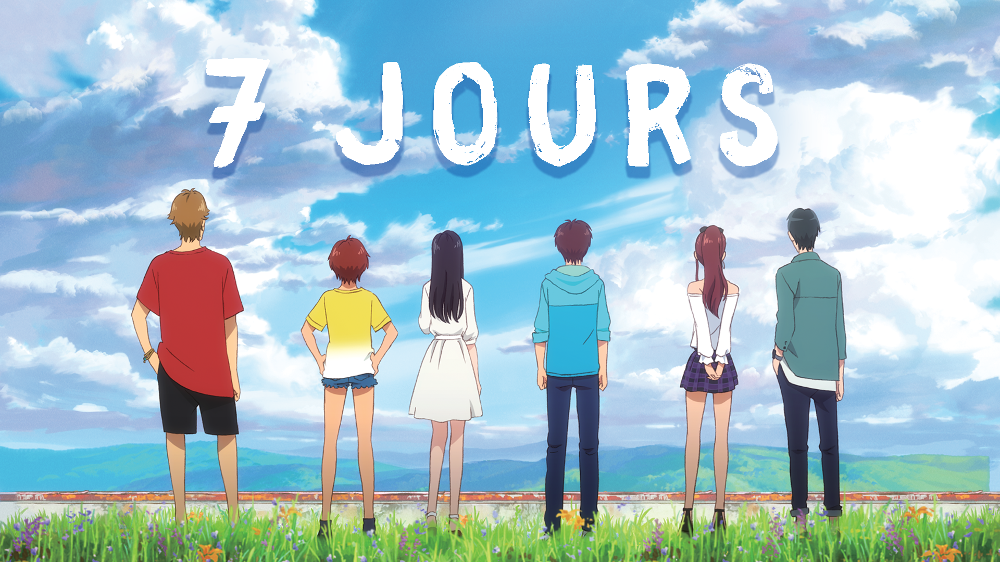
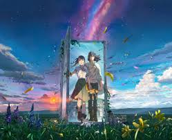

Les Films Populaires
Your Name

Boruto: Naruto Next Generation

Shingeki no Kyojin : L'attaque des Titans

One Piece Gold

Demon Slayerle train de l'infini Partie 1

Demon Slayerle train de l'infini partie 2
Demon Slayerle train de l'infini partie 3
Dr Stone épisode 2 Saison 3: spécial new world

7 jours

Suzune en VOSTFR:Classique e l'année 2023

Naruto Film 3- Mission spéciale au Pays